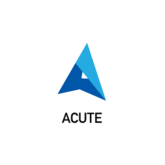
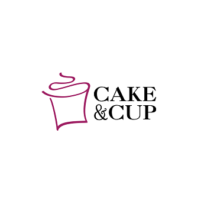
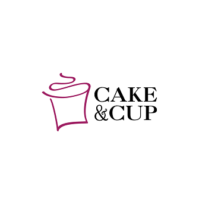
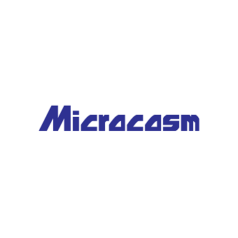
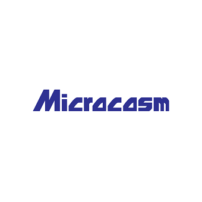

dani by design
50 Day Logo Challenge (ongoing)
These logos include conceptual logos as well as iterations for freelance jobs. Many of these come from my contribution to the Daily Logo Challenge, where participants are given a prompt everyday for a logo. They are then to post their work to a social media site- I posted my logos onto Instagram with the challenges' hashtag: #dailylogochallenge. My instagram can be found at @dani_by_design



 



 



Packaging

Maizme
The Maizme project is a demonstration of the full-cycle implementation of a novel grocery product, from the concept to the identity to the packaging prototype. The prompt was to create a novel grocery item, develop an idenity for it, as well as design and physically build the packaging, and one feature had to draw inspiration from something found in nature, incorporating biomimicry.
Logo
The logo integrates the word "maize" to refer to the crop of corn, and "me" added to the end completes to sound like a way of saying "amaze me," which is exactly what I would hope my audience would be when they use the product.
Packaging Concept/Biomimacry
The product is simply put as a kit for making homemade popcorn, and elaborately put as a 3-in-1 popcorn making kit. The 3 features are as follows: a recipe and ingredients for making popcorn (kernels and spices), microwavable and expandable packaging, and finally a sturdy packaging that acts as a bowl and prevents spillage and encourages sharing. The biomimicry that is included comes from a mechanism found in honeysuckle flowers: the bottom of the flower bud can be pulled and a "string" that is the male part of the flower will follow simultaneously pushing a bubble of nectar- delicious to taste. There is a string incorporated in the lid of the Maizme packaging, that also releases tasty flavor into the popcorn container.
The final result is a wide cyndrical shaped packaging that stands sturdy and prevents spillage of popcorn. Fitted to the bowl is a lid that has the unique "string" feature. After the popcorn is ready, the lid can be reattached to the bowl and by pulling a string, spices and flavoring can be released into the bowl from a concealed compartment inside of the lid. With the lid securely shut, the packaging is shakable and thus will spread the seasoning onto the popcorn. The lid can then be discarded and delicious popcorn is ready to share.
Some posters that were made as an undergrad at UC Davis.